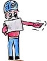

OBRUK
Bize katılın
OBRUK'u güçlü kılan, ona emek veren mağaracılardır. Gelecek kuşaklara güçlü bir OBRUK bırakmak için yeni ellere ihtiyacımız var.
Sahaya gelin
Ölçüm ve haritalama çalışmalarımıza katılın. Deneyimli üyelerin yanında topografya, çizim ve belgeleme öğrenirsiniz. Tek ip tekniği (SRT) deneyimi dikey mağaralar için gereklidir.
Çizin ve yazın
Haritaların temize çekilmesi, raporların ve OBRUK Dergisi yazılarının hazırlanması en az saha kadar emek ister. Grafik, CBS ya da editörlük becerileriniz çok değerli.
Destek olun
OBRUK kâr amacı gütmez; dergi ve saha giderleri üyelerin katkılarıyla karşılanır. Kurumsal destek ve ortak proje önerilerinize açığız.
Etik anlayışımız
Mağaralar ve yeraltı yapıları yenilenemez. Bu yüzden ekibimize katılan herkesten mağaracıların sorumluluklarını benimsemesini bekliyoruz: hiçbir şeyi kırmamak, almamak, iz bırakmamak; bulguları zamanında ve eksiksiz paylaşmak; keşfedilen yerlerin konumlarını korumak.

Yıllar içinde, bulunduğumuz farklı mağaracılık gruplarındaki ihtiyaç ve talepler doğrultusunda gelişen bir eğitim birikimimiz oluştu. Herhangi bir sistematiği takip etmemesi ve bütünsel olmaktan uzak olmasına rağmen, üzerinde emek harcanmış bu programların defalarca tekrarlanarak geliştirilmesiyle çok iyi bir seviyeye ulaşmış olduğuna inanıyoruz.Aşağıda listesi verilmiş klasik bir kaç eğitim paket programını, arzu eden mağaracı gruplara sunmaktan memnuniyet duyarız. Sözkonusu eğitimler, davet üzerine ilgili eğitmen(ler) tarafından sizin seçtiğiniz bir mekânda verilmektedir. Hiç bir maddi karşılık sözkonusu değildir, yalnız İstanbul dışı programlarda ulaşım ve konaklama sağlanmalıdır. Diğer yandan en az sekiz kişilk katılımcı ve projeksiyona uygun bir mekan ihtiyacımız bulunmaktadır (projektörü biz sağlayabiliyoruz).
MAĞARACILIĞA GİRİŞ
- Mağaracılığın Tarihçesi
- Dünyada Mağaracılığın Gelişimi
- Türkiye’de Mağaracılığın Gelişimi
- Dünyada En Uzun ve En Derin Mağaralar
- Diğer Klasmanların Rekorları
- Türkiye’de En Uzun ve En Derin Mağaralar
MAĞARA JEOLOJİSİ
- Mağara Nedir, Nerede ve Nasıl Oluşur?
- Kireçtaşı ve Diğer Kayaçlarda Mağara
- Jeolojik Açıdan Oluşum Şekillerine Göre Farklı Mağaralar
- Mağara İçi Oluşumlar
MAĞARA ARKEOLOJİSİ
- İnsanlığın Mağaraları Kullanımı
- Dünya Tarihinde Önemli Arkeolojik Mağaralar
- En Eskiden Başlayarak Önemli Mağara Buluntuları
- Türkiye’de Arkeolojik Mağaralar
MAĞARADA DÖŞEME TEKNİKLERİ
- Malzemeler, özellikleri, bakımı
- Bağlantılar (doğal bağlantılar, bolt kullanımı...)
- Fall-factor
- İyi döşeme kriterleri
- İstasyon oluşturma
- Yaklaşım hatları
- Ara istasyonlar
- Saptırmalar
- Takıl-geçler
- Sudan kaçma
- Tyrolean
ÖLÇÜM ve DOKÜMANTASYON
- Neden ölçüyoruz?
- Temel trigonometri
- Ölçüm ekipmanları ve kullanımı
- Ölçüm ekibi, görev paylaşımı
- Ölçüm yöntemi
- Defter tutma
- Eskiz alma
HARİTA ÇİZİM
- İlkel yöntem (sıfır hesap)
- Microsoft Excel hesapları ile milimetrik kağıda noktalama
- Özel mağara çizim programı kullanımı
- Estetik
İDARİ İLİŞKİLER, İZİNLER
- Yerel aktörler (valilik, muhtarlık, emniyet, kültür ve turizm md, il özel idare vb)
- Askeri birimler (jandarma)
- Merkezi aktörler (Çevre Bakanlığı, Orman Bakanlığı ...)
- Üniversite yönetimleri
- Yerel ulaşım problemleri (araç bulma, katır ayarlama vb)
- Gezide grup ve bireysel hareket adabı
- Mağara ve alan koruma statüleri, mevzuat